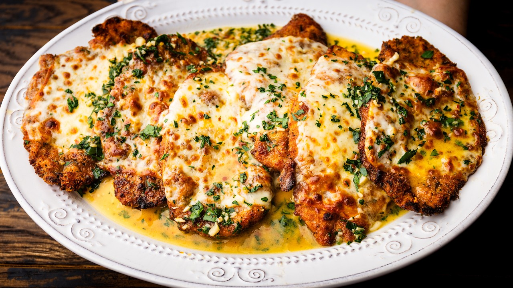

| Course | Main Dish |
| Categories | Chicken, Cheese |
| Collections | Sip and Feast |
| Source | Sip and Feast – YouTube |
| Notes | see “Notes” below |

Ingredients (with amounts) are from the video's description. The method is reconstructed from the narration and matches the creator's written recipe; prep/cook time and servings are from that print recipe (linked).
Olive oil or vegetable oil for frying, enough to fill the pan at least 1 inch high
1 1/2 pounds (680 g) chicken cutlets
3/4 cup (100 g) flour, for dredging only
2 teaspoons Diamond Crystal kosher salt, divided
1/2 teaspoon black pepper
4 large eggs, beaten
2 cups (200 g) Italian seasoned breadcrumbs
3 tablespoons minced Italian flat-leaf parsley
5 tablespoons (30 g) grated Pecorino Romano
1/4 cup (60 ml) olive oil
5 tablespoons (70 g) cold unsalted butter, cubed, divided
10 cloves garlic, minced
1/2 teaspoon crushed hot red pepper flakes
1 cup (240 ml) dry white wine
3/4 cup (180 ml) chicken stock (no- or low-sodium)
3 tablespoons (45 ml) fresh lemon juice
1/2 pound (226 g) sliced American muenster cheese (not French Muenster), or enough to cover each piece of chicken
1/4 cup minced flat-leaf Italian parsley
Set up three stations: (a) the flour, seasoned with about 1 teaspoon of the salt and the black pepper; (b) the 4 beaten eggs; (c) the breadcrumbs mixed with the 3 tablespoons parsley, the 5 tablespoons Pecorino Romano, and about 1 teaspoon salt.
Dredge each cutlet in flour and knock off the excess, then dip in egg and let the excess drip off, then press into the breadcrumbs to coat both sides. Lay the breaded cutlets on a parchment-lined baking sheet.
Add oil to a large frying pan (at least ~1/4 inch, up to 1 inch deep) and heat to about 350°F. Fry the cutlets in batches until golden on both sides, about 3 minutes per side. Drain on a wire rack.
Turn on the broiler with a rack in the second-highest position. Heat a large broiler-safe pan over just under medium heat, then add the 1/4 cup olive oil and 3 tablespoons of the butter. Add the garlic and cook, stirring, until golden — do not burn.
Add the red pepper flakes, then the chicken stock and white wine. Turn the heat to high and reduce by about a quarter (reduce more if you have fewer cutlets).
Turn off the heat and stir in the lemon juice.
Lay the fried cutlets in the sauce. Top each with sliced American muenster.
Broil, watching constantly, until the cheese melts — it goes from perfect to burnt in seconds.
Move the cutlets to a platter. Off the heat, whisk the remaining 2 tablespoons cold butter into the sauce along with the 1/4 cup parsley. Spoon the sauce (with all the garlic) over the chicken. Serve.
American muenster is used because it melts better than mozzarella and is what many NY-metro Italian restaurants use for chicken parm; sliced mozzarella works nearly as well. French Muenster is a different cheese — don't substitute it.
To make it faster, use store-bought finished chicken cutlets, or bread a large batch ahead and fry as needed.
The reduced sauce is generous; leftover sauce is good tossed with a little angel hair pasta.
Omit the red pepper flakes for no heat; nothing else changes.